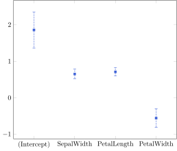
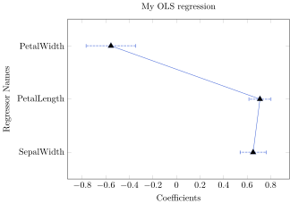
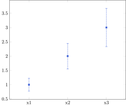

Quick Start
Plotting directly from regression
We use the Iris dataset from RDatasets.jl to demonstrate the basic usage of Coefplots.jl
The quickest way to plot a coefplot is to invoke plot().
using Coefplots
using RDatasets
using GLM
df = dataset("datasets", "iris");
regression_result = lm(@formula(SepalLength ~ SepalWidth + PetalLength + PetalWidth), df)
p = plot(regression_result)
You can also customize your coefplot by passing named arguments. For example,
p = plot(regression_result; keepcoef = ["SepalWidth", "PetalLength", "PetalWidth"], # drop intercept
title = Label(content="My OLS regression"), # add title
xlabel = Label(content="Coefficients"), # add xlabel
ylabel = Label(content="Regressor Names"), # add ylabel
width = 250, # set width of the axis
height = 180, # set height
keepconnect = true, # connect consecutive coefficients
level = 0.9, # confidence level, the default is 0.95.
vertical = false, # default is true
mark = Mark(mark=:"triangle*", marksize=4, linewidth=0)) # aesthetics
Apart from directly calling plot(), one can also invoke parse() to convert regression object to a Coefplot object. This allows users to deal with the plot with more flexibility, especially on combining plots.
using FixedEffectModels
regression_withFE = reg(df, @formula(SepalLength ~ SepalWidth + PetalLength + PetalWidth + fe(Species)));
coefplots_withfe = parse(regression_withFE; title=Label(content="OLS"))
coefplots_pool = parse(regression_result; keepcoef = ["SepalWidth", "PetalLength", "PetalWidth"], title=Label(content="with species FE"))
m = MultiCoefplot(coefplots_withfe, coefplots_pool; title = Label(content="My combined Coefplots"),
xlabel = Label(content="Regressor Names"),
ylabel = Label(content="Coefficients"),
note = Note(content="This is my note."))
p = plot(m)
Plotting from DataFrame
In order for Coefplots.jl to learn what to plot from a DataFrame, the DataFrame needs to contain the following columns: [:varname, :b, :se, :dof] (:dof is constant across rows while others should vary).
using DataFrames
df = DataFrame(varname = ["x1", "x2", "x3"],
b = [1, 2, 3],
se = [0.1, 0.2, 0.3],
dof = 10)
c = Coefplot(df)
p = plot(c)